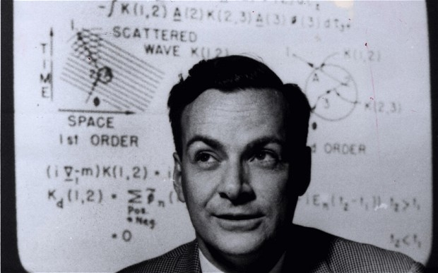

Mar 31, 2018
仅以此记录这两个我所欣赏的人的部分言论。
说起来我也用了很多年的Apple产品了（限于iPhone，MacBook Pro），但对乔布斯的了解甚少。当我还是大一的时候，我表哥送给我一本乔布斯传，我很庆幸直到今天我连那本书的外面的塑料薄膜都没撕开。因为在随后的几年中，我意识到一手资料的重要性，要学习知识，最好要直接寻找知识的源头，而不是去学习经过他人转述的二手知识。了解这个知识是为了解决什么问题而存在，是在何种状态下而被创造其实是很重要的，其重要性不亚于知识本身，这也是我为什么觉得中学就该好好教历史，当然我说的是数学史、物理学史、化学史等，而不是什么党史 :) 想要了解一个人也是一样的，看传记中的评价永远比不上看这个人本身的言论，每个人应当有自己的思考，给出自己的评价。
鉴于乔布斯生平的很多fact都能在互联网上能找到，我决定着重记录视频中出现的opinion，而非fact。
这篇采访之所以叫The Lost Interview，是因为先前大家都认为这篇采访的母带在从伦敦运往美国的途中丢失了。不过后来，这个系列的Director，Paul，在自己家的车库里发现了一份VHS Copy，于是我们终于能看到这篇采访，感谢Paul。
背景： 这篇采访发生在1995，十年前（1985），乔布斯被Apple开除，此时的他正在管理NeXT，一家在他离开Apple之后建立的公司。有趣的是，在采访结束后的一年（1996），Apple收购了NeXT，乔布斯也最终回到了Apple。
主持人问乔布斯是怎么学会管理一家公司的：
在管理公司的这些年里，我发现了一些事，我总是会问别人为什么要做这些事，得到的回答却总是，“（想完成这个目标）就是需要做这些事的”，没人知道他们自己为什么要这样做，没人去深层次地对这些事进行思考。举个例子，在车库开发Apple I的时候，我们很清楚的知道这个产品的支出；当我们在工厂里开发Apple II的时候，会计部门想要计算标准支出，就是你设置一个标准支出，然后在季度结束的时候，你就可以根据实际支出去计算差值，我一直在问为什么要这么做，答案却是“事情就是这么做的”。大概六个月之后，我终于搞清楚了这是个什么东西，人们使用这个东西只是因为他们不能很好地预估自己的支出，所以他们给出一个支出的预估值，并在季度结束时修正自己的预估值，而这只是因为他们的信息系统不够好罢了，（人们应该摆脱这些东西）可是没人这么做过。当我们在开发Macintosh的时候，我们摒弃了这些陈旧的概念，因为我们很清楚地知道我们的支出。在商业中，我把很多东西叫做过时的传统（folklore），他们现在这么做只是因为他们从前是这么做的。所以只要你愿意去发现问题，并深入思考，你可以很快地学习商业管理，这并不是什么难事（rocket science）。
主持人问到编程相关的问题：
…我们那时写的程序跟实用这个词搭不上边，它们更像是一面反映了你的思考过程的镜子，我觉得编程最重要的价值就是学习如何思考。我认为这个国家的每个人都应该学习编程，学习一门编程语言，因为编程会教你如何思考，就像去一所法律学校就读一样，我并不认为每个人都应该成为一名律师，但是我认为学习法律是非常有用的，因为它教会你用一种特定的方式思考。同样的，编程也会教会你一种略微不同的思考方式，所以我把计算机科学看作是文科（liberal art），它应该是每个人都要学习的东西。
主持人问到为什么乔布斯说“The technology crashed and burned in Xeror”：
…John Sculley来自百事公司（PepsiCo），他也许每十年才推出一个新产品，而且“新产品”也许只是换了个大小不同的瓶子而已。如果你是个做产品的人（product person），你能做的非常有限，因为你不能经常改变公司的路线，所以谁决定了公司的成败呢？是市场销售人员。所以他们才是会升职加薪的人，他们才是会管理公司的人。对百事公司来说，这也许是ok的，但同样的事也会在科技公司发生，特别是那些获得了市场垄断的公司，如IBM和施乐(Xeror)。如果你是个在IBM或施乐做产品的人，你可以做出更好的产品，so what？当公司垄断了市场的时候，它就已经不再成功了。能让这个公司（看起来）更加成功的只能是市场销售人员，最后他们会掌管这个公司，做产品的人会被排除出决策层，这家公司也就遗忘了如何才能做出伟大的产品。那些一开始将公司带向成功的，对于产品的鉴赏力以及才能，最终被一群对产品好坏一无所知的人给毁坏了。他们不懂一个好的idea最终变成一个好的product需要什么样的过程，他们的心中也没有真正想要去帮助顾客解决问题的欲望。
当提到乔布斯想要将开发重点放在GUI上的时候，却遭到了一大堆人的反对：
…当公司渐渐成长的时候，大多数公司会想要复制他们一开始的成功方式，他们觉得成功的关键就藏在他们成功的过程中（也许他们并不知道究竟是过程中的哪个点促成了他们的成功），所以他们开始尝试在整个公司中将这一成功的过程给制度化（institutionalize）。用不了多久，大家就会开始将这个过程（process）误认为是产品的内涵（content），这就是IBM衰落的原因。IBM拥有世界上最好的管理过程的人才（process people），但是他们忘记了产品的内涵。这件事也在Apple内部有些许端倪，我们拥有很多很棒的管理型人才，可他们就是对产品的内涵一无所知。在我的生涯里，我发现最好的人才是真正理解产品内涵的人，他们非常非常难以管理，但是你要忍受这些，因为他们是如此理解产品的内涵。这就是做成伟大产品的关键，不是管理过程，而是产品的内涵。
主持人问到“在开发产品的过程中什么最重要”：
…这种病就是以为有一个好的想法就已经完成了90%的工作，如果你告诉其他人“我有一个好的想法”，他们就一定能完成这个想法。这种病的问题在于，在伟大的想法与伟大的产品之间，有着一条鸿沟。最初的想法会在实现的过程中不断改变并进步，最后被实现了的想法绝对不会和最初的想法是一模一样的，因为在这个过程中你学到了更多的东西，你明白了其中的微妙之处，你意识到了你必须做无数的妥协去实现你的想法。就比如你必须向材料的物理性质妥协，比如电子的性质，塑料的性质或者玻璃的性质。设计产品就好像放了5000个概念在你的大脑里，然后把它们用新式的不同的方式组合在一起，最终才能得到你想要的东西。每天你都能发现新的东西，新的问题或者新的机遇，从而能将这些概念更好地组合在一起，这个过程才是最重要的。
乔布斯谈到招募人才的重要性：
当你费尽心思找到了足够多的人才(A player)时，你会发现他们真的能够很好的互相合作，因为他们之前从来没有得到过这样的机会（与这么多优秀的人一起共事）。他们也不会想要和水平不够的人共事(B and C player)，于是就会形成一种自我监督，他们只会招募更多的人才。招募一些好的人才，然后这种情况就会在公司中传播，最后公司里就会充满了好的人才，这就是Mac团队的样子。
主持人问到乔布斯你怎么知道哪个才是正确的方向：
You know, 这最终取决于品味（taste），取决于你要挖掘人类最好的那些东西，然后尝试着将这些好东西放到你正在做的产品里面。毕加索说过能工摹形，巧匠窃意（good artists copy, great artists steal），而我们总是在“无耻”地偷窃伟大的想法。我认为Macintosh之所以伟大的一部分原因在于，开发Macintosh的人是音乐家们、诗人们、艺术家们、动物学家们和历史学家们，他们又碰巧是世界上最好的计算机科学家，如果这些人不从事计算机科学，他们就会去做其他领域的美好的事情。我们努力想要将我们在其他领域看到的最好的东西放进这个领域里，如果你的眼光非常狭窄，我不认为你能做到这一步。

Feynman的父亲在一家生产制服的工厂工作，长期与军队的接触使他对于权威有着强烈的抗拒，而他也将这种价值观深深印在了Feynman的心里：
Disrespect是我的父亲教给我的众多东西之一。他翻到New York Times上的一张图片，图片上也许是个什么将军，他就会说“看看这些人类吧”，他说，“这个人就站在这里，而其他人都在向他鞠躬。他们有什么区别？为什么其他人都要向他鞠躬？只是因为他的名字与他的地位罢了，因为他身穿的制服，而并不是因为他做了什么了不得的事情。”
对方问Feynman，“你觉得你的工作值得一个诺奖吗？”，Feynman对此的回答：
“我不知道，我不知道关于诺贝尔奖的任何事，我不明白这一切都是怎么回事，什么值得不值得，如果瑞典学院（Swedish Academy）决定X，Y和Z获得了诺贝尔奖，那就获得了吧。瑞典学院的那些人认为这个成果足够优秀，优秀到可以拿一个奖，而我却根本看不到这有什么意义。我已经拿到了我的奖励了，那就是探索事物所获得的满足感。这个突破性的发现，以及它被广泛使用的事实，这些才是真实的东西。荣誉对我来说都是不真实的，我不相信所谓荣誉。它让我感到烦扰，荣誉对我来说是个麻烦。荣誉就是肩章，荣誉就是制服，我的父亲从小到大就是这么告诉我的。我根本无法忍受它，荣誉会伤害我。”
Feynman说到科学之美：
“我有个朋友是艺术家，他有一个我无法同意的观点。他拿着一朵花说，看这朵花多么美丽，我当然会同意这个观点。他说他作为一个艺术家，他可以看到这朵花是多么得美丽，可是你作为一个科学家，你只会把这朵花给拆解成不同的部分，于是它就成为了一朵无趣的花，我觉得他这个观点有点不正常。首先，他所看到的花朵的美丽对其他所有人都是可见的，我相信这当然也包括我，尽管我没有他那么训练有素，我也可以欣赏到这朵花的美丽之处。与此同时，我在这朵花上看到的东西比他看到的更多，我可以想象这朵花拥有灵魂，它会做很多复杂的动作，这些东西也有它们自己的美感。也就是说，（我能欣赏到的）不只是在这个厘米维度下的美，在更小的维度上，那里也有另一种美，它的内部结构，它的生长过程，它改变颜色来吸引昆虫来为它传粉的有趣事实，这说明昆虫也可以看到色彩。这就引出了另一个问题，那些比我们低等的生物，它们有没有美感呢？它们如何判断什么是美呢？这些所有由科学知识所引出的有趣问题，为花朵增添了一种神秘的令人兴奋的氛围，我不明白这些科学知识怎么会减少我所见到的美。”
这个视频从有人问了Feynman一个问题开始：
“如果你拿着两块磁铁并试着将它们推到一起，你可以感觉到它们之间的推力，如果将一块磁铁换到另一个方向的话，它们就会吸到一起。那么，这两块磁铁之间的感觉是什么样的呢？”
“什么叫这两块磁铁之间的感觉？”
“这两块磁铁之间存在一些东西不是吗？当我将两块磁铁推到一起时，我能感觉到它们之间有一些东西。”
“认真听我的问题，当你说‘这两块磁铁之间的感觉’时，你到底想表达什么呢？它们之间当然有一种感觉，可是你想知道关于它们的什么呢？”
“我想知道这两个金属块之间到底发生了什么。”
“它们互相排斥。”
“什么叫它们之间互相排斥？它们之间为什么要互相排斥？它们是怎么互相排斥的？我必须得说我觉得这是个非常非常合理的问题。”
[Return to the homepage]“这当然是个合理的问题，而且还是个很棒的问题。我们来看你的问题，当你问为什么某些事会发生，一般人会如何回答为什么这件事会发生？比如说，Aunt Minnie进医院了，为什么？因为她在冰上滑倒了并且摔坏了她的髋骨，这个解释会让人们满意。但是这个解释无法让某些来自另一个星球的，对人类一无所知的人满意。
首先，你应该明白为什么当你摔坏髋骨的时候你要去医院，当你的髋骨摔坏了之后你怎么去医院，因为她的丈夫看到了她的髋骨摔坏了然后打电话给医院，医院派人过来，这些前提都是能够被人类所理解的。当你试着去解释一个为什么的问题时，你需要在某个体系之下去解释，在这个体系下我们必须允许一些条件为真，否则你就会无休止地询问为什么。为什么她的丈夫要打电话给医院，因为她的丈夫对她妻子很关心，但这也不是绝对的，有些丈夫就对他们的妻子不感兴趣，他们可能总是喝醉，总是很愤怒。
这样思考的话，你就会得到对于这个世界的非常有趣的理解，包括事物之间的复杂关联。如果你持续分析某件事，你就会从各个不同的角度越来越深入地去看待这件事。比方说你开始怀疑，为什么Aunt Minnie在冰上摔倒了，因为冰是很光滑的，大家都知道这一点，没问题。但是为什么冰是光滑的呢，这就有点使人好奇了，冰是非常非常光滑的，你就开始想为什么会这样呢。我告诉了你冰是非常光滑的，这就解释了Aunt Minnie为什么摔倒，你可以对你的这个回答感到满意，但是你也可以继续好奇，为什么冰是光滑的呢？这时候你就会牵扯到一些其他东西了，因为世界上并没有那么多东西可以跟冰一样光滑。你很难得到这种光滑的东西，就算得到了，也八成是一种湿乎乎的黏滑的东西，可是冰却是一种如此光滑的固体，这就很奇怪了。这是因为当你站在一块冰上的时候，在那个短暂的瞬间里，冰与人之间的接触面会被挤压并融化，所以这就相当于在那个瞬间，你在一个由水组成的表面上滑行。为什么这只发生在冰上却不发生在其他东西上？因为当水结成冰时，水是会膨胀的，而当人站在上面时，冰所受的挤压会逆转这个膨胀的过程，从而使之融化，但是其他东西在结冰时就只会产生裂缝，当你用力挤压的时候，它们依然是固体。那为什么只有水在结冰的时候会膨胀而其他东西不会？
我并没有在回答你的问题，但是我在试着告诉你一个为什么的问题是多么地难以回答，你必须要知道哪些东西是允许被你理解的，允许被你知道的，以及哪些不是的。你应该会注意到，在上面那个例子里，每当我问了一个为什么，我们就会发现更加深层次的，同时也更加有趣的东西。我们甚至可以再深入一点，为什么Aunt Minnie滑倒了就会摔倒呢，这就跟每个星球上的重力有关了，当然这还与其他的一些东西有关。不过我们先不管这些了，我们只要知道这个深入的过程是非常漫长的。
回到你的例子，当你问我，为什么两块磁铁会互相排斥，我的回答会有很多很多不同的层次，这取决于你是一个物理系的学生，或是一个对物理一无所知的人。如果是一个对物理一无所知的人问我，我就只能说，磁铁之间存在的磁力使它们互相排斥，你可以感受到它们的排斥。你可能会觉得很奇怪，因为你从来没有见过其他的力跟这所谓的磁力一样，当你将一块磁铁反向时，磁铁又变得互相吸引了。世界上存在着另一种相似的力叫做电力（electric force），它也面临这同样的问题，你会发现电力也是十分诡异的。可是你却能够接受以下事实：当你的手用力按压一把椅子的时候，你会感受到这把椅子正在用相同的力推你。但是我们根据观察发现，这是和磁力是类似的，电力的互斥（electrical repulsion）会阻止你的手穿过椅子，因为在微观层面存在着电力。事实证明，我一开始所希望解释的电力与磁力各自的互斥问题，最终是一个更深层次的东西，而这个更深层次的东西，又可以用来解释很多人们不知不觉就接受了的事实，比如大家都知道我们不能将我们的手穿过这把椅子，大家都觉得这是理所当然的。但是如果你问，为什么人不能把自己的手穿过椅子呢？这就会牵扯到上面提到过的互斥力了。这时候我们又会开始好奇，为什么磁力的作用距离比其他的力大这么多呢？这就跟一个事实有关，那就是在金属中，所有的电子都朝着同一个方向转动并形成直线，它们的力会被叠加直到大到你可以感受到这个力的存在…
我无法用一些你熟悉的东西去解释异性相吸的问题，如果我说两块磁铁之间的互相吸引就好像是它们之间被橡胶带给连在一起了，那我就是在欺骗你，因为它们根本不是由橡胶带相连的，我不该陷入这种麻烦，因为你马上就会接着问我橡胶带的本质是什么。其次，如果你足够好奇的话，你又会问我，为什么橡胶带会倾向于恢复原样，我最后又要用电力来解释它，而电力正是我想要利用橡胶带来解释的东西，那我就不只是在欺骗你了，我还欺骗得非常蹩脚。所以，我并不能告诉你为什么两块磁铁会互相吸引，我只能告诉你，它们就是互相吸引，这是各种不同的力的一个特性，包括电力，磁力，重力等，它们就这个世界的一部分。如果你是个物理系的学生，我就会告诉你电力和磁力存在着某种非常紧密的关联，而重力和电力之间的关系目前还不清楚，等等。我真的不能够做到用某种你更熟悉的事物来解释磁力，因为我不理解如何用你更熟悉的事物来解释它。